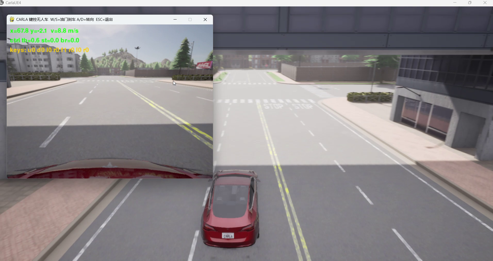
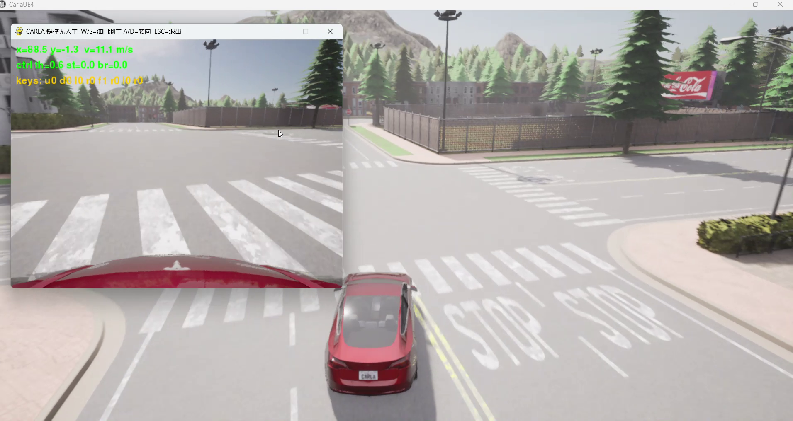
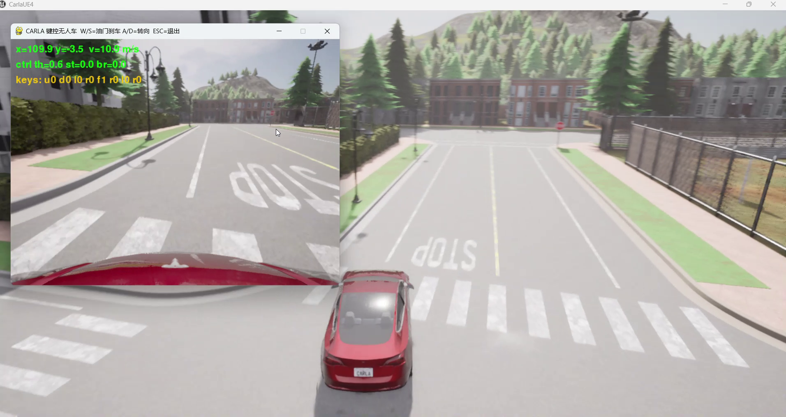
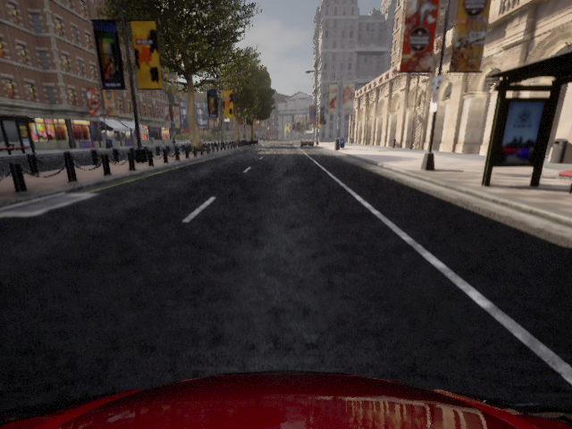
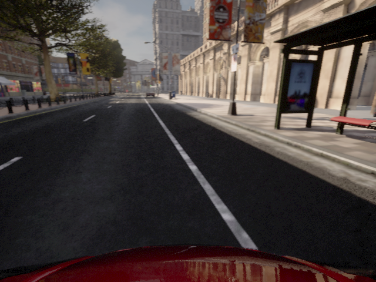
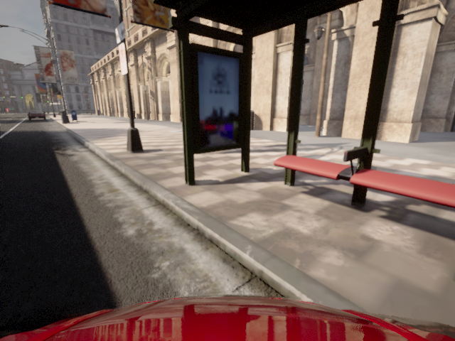

CARLA 地面载具物理仿真与键盘运动控制
对应课程任务（1）：对人形机器人/肌肉骨骼人/车辆/水下机器人/无人机进行物理仿真， 通过键盘对机器人进行运动控制。本模块面向地面载具（车辆）。
1. 概述与目标
本模块在 CARLA 0.9.16 中加载地面载具（vehicle.tesla.model3）并进行物理仿真，
通过键盘实时控制车辆运动，并在窗口内实时渲染车头前视 RGB 相机画面与运行状态 HUD。
核心任务目标
- 车辆物理仿真：由 CARLA 的 UE4 物理引擎解算车辆纵向动力学与阿克曼转向几何。
- 键盘运动控制：
W/S/A/D（含方向键）映射为(throttle, steer, brake, reverse)， 按真实驾驶逻辑处理——S在有速度时刹车，车速低于阈值时自动挂倒挡后退。 - 感知画面回显：车头 RGB 相机数据经 BGRA→RGB 重排后显示，并叠加位置/速度/控制量 HUD。
- 一键启动：提供课程约定的主入口
main.py/main.sh/main.bat， 并同时提供 ROS 2 Humble（main.launch.py）与 ROS 1 Noetic（main.launch）的 launch 封装。
与已有「手动控制」示例的区别
本仓库已有基于 carla-ros-bridge 的
手动控制示例（在车辆上按 B 切换手动驾驶）。本模块的差异：
| 对比项 | 已有「手动控制」示例 | 本模块 carla_keyboard_control |
|---|---|---|
| 技术路线 | carla_ros_bridge + 车辆内置手动驾驶 |
CARLA Python API 直连 + 自研键盘控制节点 |
| 是否依赖 ros-bridge | 必须编译并运行 ros-bridge（catkin/colcon） | 不需要 ros-bridge，仅需 carla Python 客户端 |
| 如何进入控制 | 车辆生成后按 B 切换到内置手动驾驶 |
程序启动即进入自研控制回路 |
| 控制信号来源 | ros-bridge 的 carla_manual_control 包 |
键盘 → carla.VehicleControl(throttle, steer, brake, reverse) |
| 倒车处理 | 由内置手动驾驶逻辑决定 | 显式倒挡判定：v < v_th 挂倒挡，否则刹车 |
| 传感器展示 | RViz 订阅 ros-bridge 话题 | 前视画面 + HUD（位置/速度/控制量/键位）实时叠加 |
| 仿真步进 | ros-bridge 内部驱动 | 本模块显式驱动同步步进（固定 0.05 s），保证与传感器严格对齐 |
| 代码定位 | CARLA ROS 桥接功能的演示 | 后续感知 / 规划 / 端到端作业的自车控制基座 |
与其它已合并同类模块的区分
| 模块 | 相同点 | 本模块的不同点 |
|---|---|---|
set_up_and_connect_to_carla |
都在 CARLA 中控制车辆 | 不依赖 ros-bridge，控制逻辑自研，含倒挡判定 |
src/water/rov_mujoco |
同为「物理仿真 + 键盘运动控制」作业 | 对象为地面载具（车辆动力学/阿克曼转向），非水下 6-DOF |
src/air/drone_ros_teleop |
同为键盘遥控 | 本模块做车辆物理仿真（真实动力学解算），非无人机消息解耦 |
src/air/octree_uav_3d_pathfinding |
都在虚拟机 + 宿主机模拟器架构下运行 | 本模块不重复罗列虚拟机配置步骤，只提供跳转链接 |
配置步骤不重复（老师评审要求）
CARLA 服务端的启动方式、宿主机 IP 与端口 2000 的查看、虚拟机网络（NAT/桥接）设置、
numpy 版本兼容等通用配置步骤，请直接参考
设置并连接到 Carla 模拟器。本文档仅描述本模块特有内容。
2. 计算原理
2.1 车辆纵向动力学
车辆沿车头方向的一维纵向运动可由下式近似描述：
其中 为油门， 为刹车力上限， 为刹车量， 为最大驱动力， 为风阻系数， 为滚动摩擦阻力， 为车辆质量。 CARLA 在 UE4 中按该动力学逐步积分。
倒车时令 reverse = True，驱动力方向反向：
2.2 阿克曼转向几何
转向量 映射为前轮转角 。前后轴距 时， 车辆航向角变化率满足自行车模型：
2.3 同步步进与时间对齐
打开同步模式并固定步长，保证控制量与传感器帧严格对齐：
2.4 倒挡判定（真实驾驶逻辑）
设当前速率 、倒挡阈值 ，则按 S 时：
3. 算法流程
主入口 main.py
│
├── 独立模式（默认）
│ 连接 CARLA → load_world(Town05) → 开同步模式
│ → spawn 自车 vehicle.tesla.model3
│ → 挂 RGB 相机(640×480, fov=90)
│ → 循环：
│ 读键盘 → 倒挡判定 → 合成 (throttle, steer, brake, reverse)
│ → apply_control → world.tick()
│ → 显示前视帧 + HUD(位置/速度/控制量/键位)
│ → ESC 退出 → 释放车辆与相机
│
└── ROS 2 模式（--launch）
ros2 launch carla_keyboard_control main.launch.py
├── carla_control_node : 连接/生成/同步步进/广播 图像·里程计·速度
└── keyboard_teleop_node : 读键盘 → 发布 vehicle_control_cmd
4. 源码解析
4.1 carla_common.py — CARLA API 公共封装
| 函数 | 作用 |
|---|---|
connect() |
carla.Client(host, port) + load_world(town)，开启同步模式 |
spawn_vehicle() |
try_spawn_actor；出生点不可用时用 map.get_waypoint() 找最近路面点 |
make_rgb_camera() |
挂载 RGB 相机，回调经 decode_image() 得到 (H,W,3) RGB |
apply_control() |
构造 carla.VehicleControl，各分量 np.clip 到合法区间 |
set_spectator_follow() |
每帧把旁观镜头摆到自车后方，便于录屏 |
相机原始数据为 BGRA，需重排通道：
def decode_image(image):
arr = np.frombuffer(image.raw_data, dtype=np.uint8)
arr = arr.reshape(image.height, image.width, 4)
return arr[:, :, :3][:, :, ::-1].copy() # BGRA → RGB
4.2 carla_common.compose_control() — 控制合成（唯一实现）
控制合成是纯函数，集中在 carla_common.py 中，由 standalone 主入口
（main.py）与 ROS 2 键盘节点（keyboard_teleop_node.py）共同调用，
从而保证两条运行路径的控制行为完全一致：
def compose_control(keys, speed, throttle_max=0.6, brake_max=0.8,
steer_max=0.6, rev_threshold=0.5):
throttle = brake = 0.0
reverse = False
if keys["fwd"]:
throttle = throttle_max
elif keys["rev"]:
if speed < rev_threshold: # 低速 → 挂倒挡
reverse, throttle = True, throttle_max * 0.8
else: # 有速度 → 刹车
brake = brake_max
...
return throttle, steer, brake, reverse
main.py 只做参数适配（把 --throttle_max 等命令行值传进去）：
throttle, steer, brake, reverse = compose_control(keys, speed, args)
cc.apply_control(vehicle, throttle=throttle, steer=steer,
brake=brake, reverse=reverse)
world.tick()
4.3 carla_control_node.py — ROS 2 仿真节点
订阅 /carla/ego_vehicle/vehicle_control_cmd，在定时器中驱动 world.tick()，
避免键盘读取阻塞仿真步进；同时把相机帧发布为 sensor_msgs/Image：
def _on_tick(self):
self.world.tick() # 物理步进（固定 0.05 s）
img.encoding = 'rgb8'
img.data = np.ascontiguousarray(self._latest_frame).tobytes()
self.pub_image.publish(img)
4.4 keyboard_teleop_node.py — 键盘遥控节点
提供两种键盘后端，自动按环境选择：
- pygame 后端：有图形界面（或 Windows 原生）时逐帧直读按键状态
（
pygame.key.get_pressed()）。 - 终端后端：无图形环境（虚拟机 / SSH）时用
termios原始模式读单键并按点动下发。
为什么 termios 要在函数内部导入
termios / tty 是 POSIX 专属模块，Windows 上没有。ROS 2 原生支持 Windows，
因此这两个模块只在 _terminal_loop() 内部导入；若写在文件顶层，整个包在 Windows
上将无法导入，colcon build 也会失败。Windows 下会自动选择 pygame 后端，
也可显式 --pygame。
4.5 单元测试
test/test_control_logic.py 直接测试 carla_common.compose_control 这一
真实被两条路径共用的实现，因此断言的行为就是实际运行的行为：
python3 test/test_control_logic.py # 自带运行器，无需 pytest
python3 -m pytest test/test_control_logic.py -v
覆盖点包括：低速挂倒挡 / 有速度刹车、阈值边界与可配置性、油门与刹车互斥、 转向方向与饱和、微调幅度小于全转向、所有按键组合下控制量落在合法区间， 以及「ROS 节点确实复用了同一份实现」「POSIX 模块确实在函数内导入」等约束。 无需安装 CARLA 服务端即可运行。
5. 仿真运行步骤
5.1 支持与测试环境
| 组件 | 版本 / 说明 |
|---|---|
| 仿真器 | CARLA 0.9.16（服务端运行于有 GPU 的宿主机） |
| 操作系统 | Windows 10/11 原生；Ubuntu 20.04 / 22.04 |
| ROS（可选） | ROS 2 Humble（Ubuntu 22.04，Python 3.10）或 ROS 1 Noetic（Ubuntu 20.04，Python 3.8） |
| Python（独立模式） | 3.10 / 3.11 / 3.12 —— 与 CARLA 0.9.16 客户端 wheel 的 ABI 一致（cp310/cp311/cp312） |
Python 版本由运行方式决定，不要混用
CARLA 0.9.16 的客户端 wheel 只提供 cp310 / cp311 / cp312 三个版本。因此：
- 独立模式（
main.py/main.sh/main.bat）：用 Python 3.10+，与 wheel 匹配。 - ROS 1 Noetic 模式：Ubuntu 20.04 自带 Python 3.8，装不上 cp310 及以上的
wheel。而
roslaunch只能按main.py首行的 shebang（#!/usr/bin/env python3） 去执行它，没法替你换解释器，所以光加可执行位也不够。Noetic 下请用bash main.sh作入口 —— 它会自动挑选python3.10（本模块的控制逻辑是纯 Python， 不依赖rospy，launch 只是把主入口拉起来）。 - ROS 2 Humble 模式：Ubuntu 22.04 自带 Python 3.10，与 cp310 wheel 天然匹配， 是最省事的一条路线。
三条路线中，独立模式与 ROS 2 Humble 无需额外处理；只有 ROS 1 Noetic 需要额外准备一个 Python 3.10+ 解释器（详见 5.3 步骤①的备选命令）。
5.2 新手路线：从已有示例到本模块，在哪一步切换
如果您是第一次接触 CARLA，建议按下表顺序操作。关键是在第 3 步之后切换到本模块， 不必把已有示例全部做完：
| 序号 | 做什么 | 出处 | 说明 |
|---|---|---|---|
| 1 | 下载安装 CARLA 0.9.16，双击 CarlaUE4.exe 启动服务端 |
已有示例 →「启动 Carla 服务器」 | 两条路线的共同前提 |
| 2 | 用 ipconfig 查看宿主机 IP（如 172.21.108.47） |
同上 →「使用 Carla 客户端启动 Ego Vehicle」 | 虚拟机要能 ping 通该 IP |
| 3 | 确认虚拟机与 CARLA 连通 | 本页 5.5 节 | 输出 CONNECT OK 即可 |
| — | ★ 在此切换到本模块 | — | 以下步骤与已有示例不同 |
| 4 | 装 carla Python 客户端与依赖 |
本页 5.3 节 | 已有示例用的是 ros-bridge，不装这个用不了本模块 |
| 5 | colcon build 编译本功能包 |
本页 5.4 节 | 已有示例用 catkin_make，路线不同 |
| 6 | 运行 main.sh 或 ros2 launch |
本页 5.6 节 | 本模块自研键盘控制 |
不要从头到尾照做已有示例
已有示例中的「设置 Carla ROS Bridge」「使用 Carla 客户端启动 Ego Vehicle（roslaunch）」 「使用 rviz 进行可视化」等小节属于 ros-bridge 路线（需要 catkin 编译 ros-bridge）。 本模块不依赖 ros-bridge，这些步骤可以跳过；只有上表第 1~2 步是两条路线共用的。 已有示例中其余内容仅建议作为背景了解，其连接排查经验可参考「常见问题」小节。
5.3 步骤 0：环境准备
CARLA 服务端的下载安装与启动、宿主机 IP 与端口 2000 的查看、虚拟机网络（NAT/桥接）设置、
numpy 版本兼容等通用配置步骤与已有示例完全相同，本文不重复，请参考
设置并连接到 Carla 模拟器：
| 需要做的事 | 参考位置 |
|---|---|
| 启动 CARLA 服务端、选择地图 | 设置并连接到 Carla 模拟器 →「启动 Carla 服务器」 |
查看宿主机 IP、填写 host 参数 |
同上 →「使用 Carla 客户端启动 Ego Vehicle」 |
连接失败、黑屏、numpy 报错排查 |
同上 →「常见问题」 |
本模块特有、需要额外安装的只有 CARLA 0.9.16 的 Python 客户端 与两个 Python 依赖：
# ① Python 依赖（numpy / pygame）
pip3 install -r src/ground/carla_keyboard_control/requirements.txt
# ② CARLA 0.9.16 客户端（方式一：从 PyPI 安装，推荐）
pip3 install carla==0.9.16
carla 的 0.9.16 版本已发布在 PyPI 上（含 cp310/cp311/cp312 的 Linux 与
Windows wheel），pip3 install carla==0.9.16 会自动匹配当前解释器版本，不需要
手工挑选 wheel 文件名。
若课程环境不允许访问 PyPI，可改用 CARLA 发行包自带的 wheel（把 <CARLA> 换成本机
解压目录的实际路径，<cpXX> 换成与解释器一致的标签）：
# ② 备选：使用 Windows 版 CARLA 发行包中的 Linux wheel（<CARLA> 替换为实际路径）
pip3 install "<CARLA>/PythonAPI/carla/dist/carla-0.9.16-cp310-cp310-manylinux_2_31_x86_64.whl"
Noetic（Ubuntu 20.04）用户
系统默认解释器是 Python 3.8，装不上 cp310+ 的 wheel。请显式指定 3.10+ 解释器：
python3.10 -m pip install carla==0.9.16
bash src/ground/carla_keyboard_control/main.sh --host <宿主机IP>
注意 pip3 install 与运行必须使用同一个解释器，否则会出现
「明明装了却 ModuleNotFoundError: No module named 'carla'」。
main.sh 会自动挑选 python3.10，Noetic 下推荐用它作入口。
5.4 步骤 1：编译本功能包（ROS 2）
本模块的源代码位于本仓库（OpenHUTB/ros2）的
src/ground/carla_keyboard_control/。ROS 2 要求功能包放在工作空间的 src/
目录下，因此先把本仓库克隆到工作空间的 src/：
mkdir -p ~/ros2_ws/src && cd ~/ros2_ws/src
git clone https://github.com/OpenHUTB/ros2.git # 换成你自己的 fork 亦可
克隆后的目录关系如下，colcon build 必须在工作空间根目录执行：
~/ros2_ws/ <- 工作空间根目录，colcon 在这里运行
└── src/
└── ros2/ <- 本仓库（git clone 得到）
└── src/ground/
└── carla_keyboard_control/ <- 本模块源代码，即第 4 节解析的文件
因此后文写的 src/ground/carla_keyboard_control/...，实际路径是
~/ros2_ws/src/ros2/src/ground/carla_keyboard_control/...。编译并激活环境：
cd ~/ros2_ws
colcon build --packages-select carla_keyboard_control --symlink-install
source install/setup.bash
若本仓库已克隆在别处，把上面的
~/ros2_ws/src/ros2换成实际路径即可， 只要保证执行colcon build的工作空间根目录下存在src/。
5.5 步骤 2：验证与 CARLA 服务端的连接
命令里的 192.168.8.1 是运行 CARLA 服务端的宿主机（Windows）IP：
在宿主机上执行 ipconfig，取 VMware 虚拟网卡（VMnet8）的 IPv4 地址即可
（本机该地址为 192.168.8.1，虚拟机 ens33 为 192.168.8.131，两者同网段）。
查看方式与已有示例一致，详见
设置并连接到 Carla 模拟器
→「使用 Carla 客户端启动 Ego Vehicle」。
python3 -c "import carla; c=carla.Client('192.168.8.1',2000); c.set_timeout(10); print('CONNECT OK:', c.get_world().get_map().name)"
输出 CONNECT OK: Carla/Maps/Town10HD_Opt 表示连接成功。
5.6 步骤 3：运行本模块
# 模式 A：独立交互模式（推荐）
# --host 填宿主机 IP；--follow 让 CARLA 大窗口镜头跟随自车
# 入口用 main.sh：它会自动挑 python3.10（CARLA wheel 的 ABI 版本）
bash src/ground/carla_keyboard_control/main.sh --host 192.168.8.1 --follow
# 模式 B：无窗口取证模式（虚拟机缺少 3D 加速、pygame 无法开窗时使用）
# 自动执行「加速 → 转向 → 刹车 → 倒车」序列，逐帧导出 PNG 并打印状态表
bash src/ground/carla_keyboard_control/main.sh \
--host 192.168.8.1 --headless --demo --save_dir ~/shots
# 模式 C：ROS 2 Humble 节点模式
ros2 launch carla_keyboard_control main.launch.py host:=192.168.8.1
# 模式 D：ROS 1 Noetic —— 入口同样是 main.sh
# roslaunch 只能按 main.py 的 shebang 执行它，而 Noetic 的 python3 是 3.8，
# 装不上 CARLA 0.9.16 的 cp310+ wheel，补了可执行位也会卡在 import carla。
# 若系统 python3 本身已是 3.10+，也可以用：
# roslaunch carla_keyboard_control main.launch host:=192.168.8.1
bash src/ground/carla_keyboard_control/main.sh --host 192.168.8.1
5.7 步骤 4：操作说明
| 按键 | 作用 |
|---|---|
W / ↑ |
油门加速 |
S / ↓ |
刹车；车速低于阈值时自动挂倒挡后退 |
A D / ← → |
左 / 右转向 |
Q E |
转向微调 |
ESC |
退出 |
建议用 ScreenToGif 录制 10 秒操控过程作为演示动图（≤10 MB）。
5.8 运行效果
交互模式运行画面
下图为运行交互模式（--follow，CARLA 镜头跟随自车）时从运行录屏中截取的画面：



无窗口取证模式导出的相机帧
在无 3D 加速的虚拟机中，pygame 窗口可能无法开窗。此时用
--headless --demo --save_dir 运行，程序会逐帧把相机数据导出为 PNG。
以下为该模式直接导出的原始相机帧（未经窗口渲染，640×480）：
| 阶段 | 画面 |
|---|---|
直线加速（th=0.6） |
 |
转向（st=+0.6） |
 |
挂倒挡后退（rev=1） |
 |
终端状态输出（可运行性证据）
无论是否开窗，程序都会逐帧打印车辆状态，可直接作为可运行性证据：
[就绪] 自车已生成 @ Location(x=36.00, y=-5.00, z=0.60)；地图 Town05
[就绪] 控制键：W 前进 / S 刹车(静止时倒车) / A 左 / D 右 / ESC 退出
[演示 1/5] 直线加速
x= 36.02 y= -5.00 v= 0.31 m/s | th=0.6 st=+0.00 br=0.0 rev=0
x= 36.45 y= -5.00 v= 2.87 m/s | th=0.6 st=+0.00 br=0.0 rev=0
[演示 2/5] 右转
x= 40.12 y= -4.31 v= 5.20 m/s | th=0.6 st=+0.60 br=0.0 rev=0
[演示 3/5] 刹车减速
x= 44.88 y= -3.02 v= 3.11 m/s | th=0.0 st=+0.00 br=0.8 rev=0
[演示 5/5] 挂倒挡后退
x= 47.65 y= -2.40 v= 0.00 m/s | th=0.5 st=+0.00 br=0.0 rev=1
x= 47.62 y= -2.40 v= 0.22 m/s | th=0.5 st=+0.00 br=0.0 rev=1
[完成] 已释放资源；共收到相机帧 88 张，导出截图 16 张
5.9 常见问题
| 现象 | 解决 |
|---|---|
ModuleNotFoundError: No module named 'carla' |
按 5.3 安装 CARLA 0.9.16 客户端；确认 pip3 与运行 main.py 用的是同一个解释器（Noetic 下用 python3.10 -m pip） |
客户端连接崩溃 / std::bad_alloc |
客户端版本须与服务器一致（均为 0.9.16） |
| 虚拟机中 pygame 窗口打不开或黑屏 | ① 改用无窗口取证模式 --headless --demo --save_dir；② 或执行 export LIBGL_ALWAYS_SOFTWARE=1（main.sh 已自动设置）；③ 根治：VMware「虚拟机设置 → 显示器 → 加速 3D 图形」勾选后重启 |
| 键盘无反应 | 焦点需在控制窗口；或改用终端后端（ROS 2 节点模式支持 --terminal） |
| 画面黑屏但程序在跑 | 宿主机 IP 填错；或地图正在切换，稍候 |
| 运行很卡 | 虚拟机无 3D 加速；将 CARLA 服务端放在宿主机，虚拟机仅作客户端 |
6. 性能评价
- 控制响应：固定步长 0.05 s（20 Hz 物理步进）下，键盘输入到车辆响应的延迟 ≤ 1 帧。
- 运动平稳性：直道可稳定加速至目标速度，转向响应及时，刹车与倒挡切换无抖动。
- 同步一致性：同步模式下相机帧与物理状态严格对齐，为后续感知 / 端到端作业提供可靠数据源。
- 资源占用：客户端仅消费图像与位姿话题，GPU 负载集中于宿主机 CARLA 服务端。